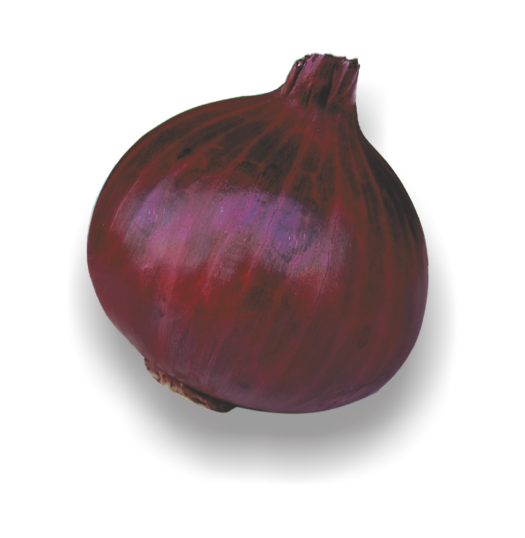
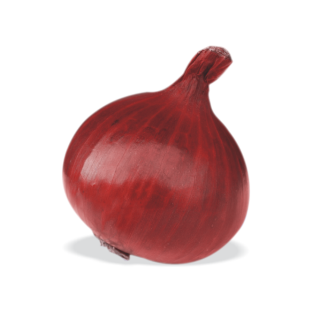
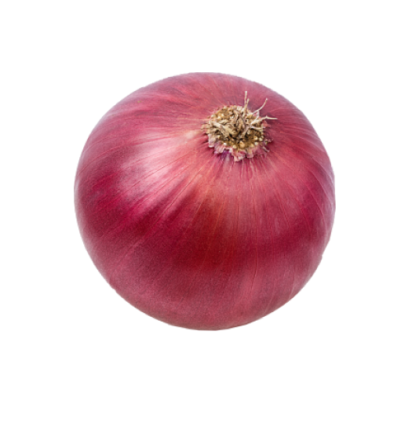
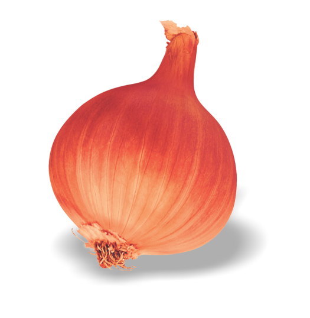

What we Offer
to maintain standards we have assured our seed quality by focusing
1
Only stock of high genetic purity are used , We put very high emphasis on our seed quality, and our seed standard is significantly higher than is commonly encountered
2
Only commercial seeds meeting the most stringent standards in terms of genetic purity, germination, conductivity disease etc. are accepted for processing
3
All seed lots are tested for purity and germination upon receipt at our facilities and again, prior to despatch, to ensure high standards

Bulbs are dark red, globular in shape, 4-6cm in size with tight skin and moderately pungent.
Healthy & straight plant
Bulbs matures 90-100 DAT
Keeping quality average
Total soluble solid (12-13%)
Average yield (250-300 q/ha)
Recommended for kharif season

Plant : Semi-erect, height 55-60cm, medium green leaves and no foliage cranking
Bulb : Dark red, flat globe, neck thickness thin, polar diameter 4.0-4.2 cm, equatorial diameter 4.5-5.0 cm, symmetrical bulb, single axis and non-splitting types
Recommended season and region :Kharif - C.G., Delhi, Guj, HR, J&K, Assam, M.P., M.H., Orissa, Punjab, Raj., T.N.| Late Kharif - Guj, Karnataka & M.H.
Maturity - 100-110 DAT (kharif)
Bolting - 5% in late kharif
Average yield - 22-24 t/ha (kharif)
Storability - 2 months (kharif)
Total Soluble Solid - 10-11° Brix

Plant : Semi-erect, height 50-55cm, medium green leaves and no foliage cranking
Bulb : Attractive red globes, neck thickness medium, polar diameter 4.0-4.5 cm, equatorial diameter 4.5-5.0 cm, symmetrical bulb, single axis and non-splitting types
Recommended season and region:Kharif - C.G., Delhi, Guj, HR, J&K, M.P., M.H., Orissa, Punjab, Raj., T.N.| Late Kharif - Guj, Karnataka & M.H.
Maturity - 100-105 DAT (kharif), 110-120 DAT (late kharif)
Bolting - 5-10% in late kharif
Average yield - 20-22 t/ha (kharif), 40-45 t/ha (late kharif)
Storability - 30-45 days (kharif), 3 months (late kharif)
Total Soluble Solid - 10-11° Brix

Globe in Shape
Colour Deep Dark Red
Duration : 95-100 Days after Transplantation
Storage 6 Months.
Season : Only Rabbi
TSS: 12-13% & Dia : 4-6 cm

Deep red color
Globe in shape
Medium pungency
Compact yielding variety
Duration 90-95 days after transplantation
Storage 2-3 months & seed/ Acre 3 kg.
TSS : 13-14% & Dia : 4.5-5 cm

Colour Light red to faint pinkish
Round shape
Kharif sowing in Maharashtra, South India
Two Layer leaf and Tolerant to fungal
Duration 110-120 days after transplantation
Storage 8-9 months (Less loss in storage)
Gets good Market price & Seed/ Acer 3 Kg.
13-14% & Dia : 5.5-6 cm

This variety is light red segment for kharif in Maharashtra & South India
for Rabi throughout India.
Colour Light Red to faint radish and low weight loss in storage.
Tolerant to fungal attract in storage.
Two layers variety.
Duration 110-120 days after transplantation.
Storage 8-9 months & seed/Acre 3 kg.
TSS: 12-14% & Dia : 5-6 cm

Bulbs are deep red/purple color, globe in shape.
95-100 days after transplantation.
2.5-3 month storage
seed rate : 3kg/acre.
Moderate in pungency and more flessy in nature.

Best Gemination ability.
Early yielding variety.
High Yields.
Low and high water tolerance.
Onion color red and attractive because of the high selling variety.

Best Gemination ability.
Early yielding variety.
High Yields.
Low and high water tolerance.
Onion color red and attractive because of the high selling variety.
Globe to Flat - globe in shape & red in colour
Attractive shiny faint red colour of bulb
Perfect for higher market value.
Highly tolerant to bolting & joint bulb.
Susceptibly for different Stress & High Yield
Duration 80-90 days after transplantation
Storage 3-4 months & seed/Acre 3 kg.
TSS : 13-13% & Dia : 4.5 - 5 cm

Oval-flat in shape & moderate in size
High Pungent, Excellent T.S.S.
Suitable for vinegar & dehydration for
Export quality
Duration 100-105 Days after transplantation
3 Month storage & Seed/Acre 3 Kg.
TSS : 13-14% & Dia : 5-6 cm
This variety is light red segment for kharif in Maharashtra & South India
for Rabi throughout India.
Colour Light Red to faint radish and low weight loss in storage.
Tolerant to fungal attract in storage.
Two layers variety.
Duration 110-120 days after transplantation.
Storage 8-9 months & seed/Acre 3 kg.
TSS: 12-14% & Dia : 5-6 cm